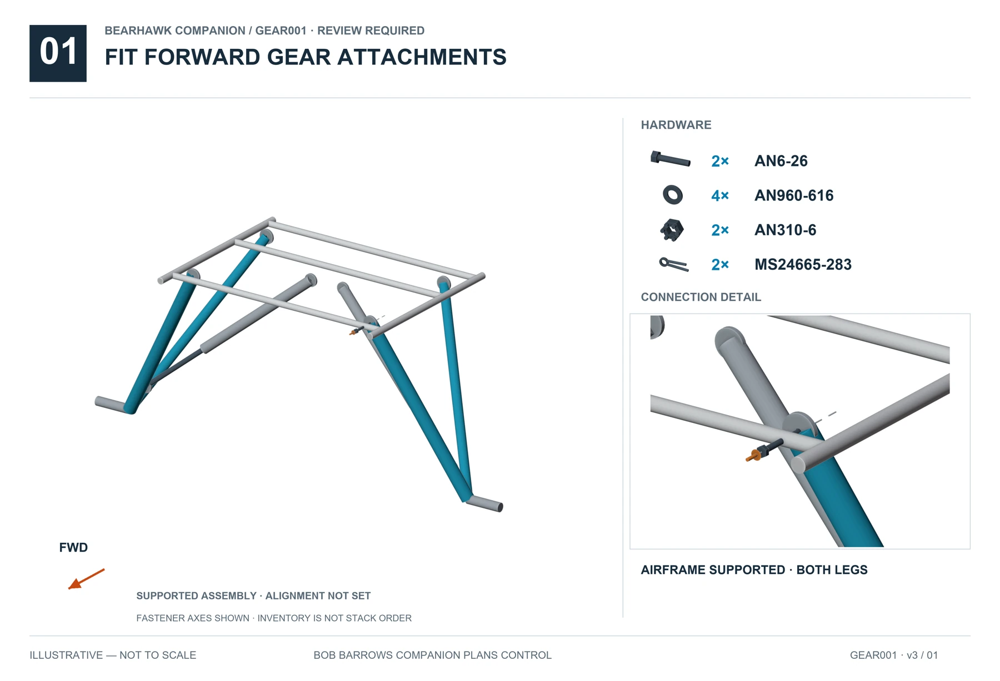
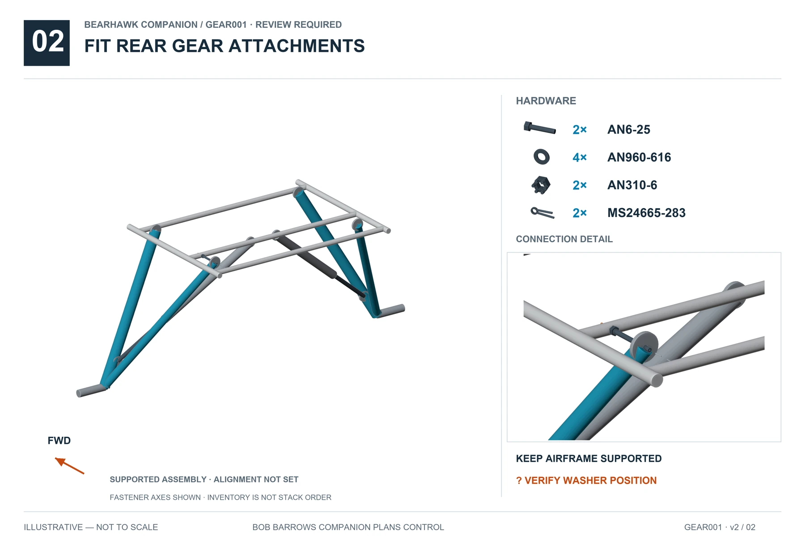
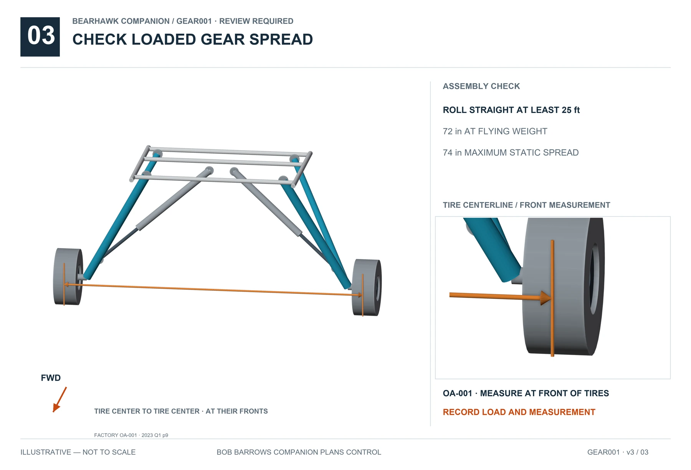

12 · LANDING-GEAR · GEAR001 · v3
Main Landing Gear
REVIEW REQUIREDSupported relationships are illustrated. Resolve the open items below before completing affected operations. Hardware inventories do not specify unresolved stack order.
Before this operation
The May 29, 2025 Barrows heavy-duty gear material note is optional and names the Companion. It is indexed as a configuration choice; this guide does not direct modification or replacement of the supplied gear.
See the real installation
View 1 reference photos →Model and source are shown on every photo. Photos supply visual context only.
Tap an illustration for full-size viewing.
Fit forward gear attachments
Full size ↗
Fit rear gear attachments
Full size ↗
Check loaded gear spread
Full size ↗
Open items
- BH-REV-019 · Exact washer allocation, gear alignment and support setup need current-kit verification.
Beartracks / factory updates
Sources and visual references
- Companion plans25–26
- BHManual-Fuselage1-25Rev1.pdf pp9–11
- Companion Hardware Callout Rev2, supplied Companion+Hardware+Customer+-+Sheet1-2.pdf p1 HK-LG4
- 2023_Beartracks.pdf, PDF p9 / Q1 p9, Landing Gear Tread Width Adjustments
- 2024_Beartracks.pdf, PDF p36 / Q4 p4, Jay Townsend walk-around
- 2025_Beartracks.pdf, PDF p23 / Q2 p13, Bob Barrows signed Engineering Note, May 29 2025
- Factory OA-001, March 1 2023, Gear Spread Limits, p1